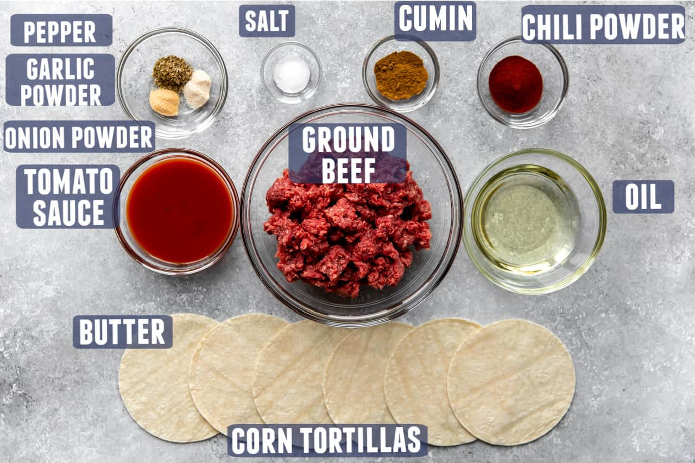
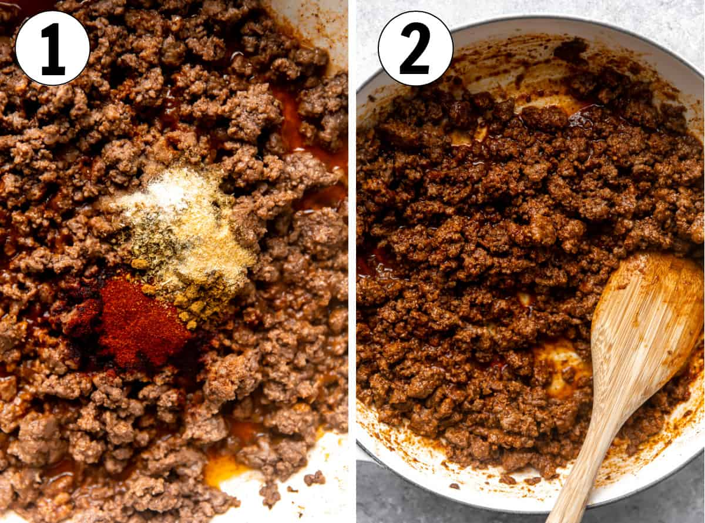
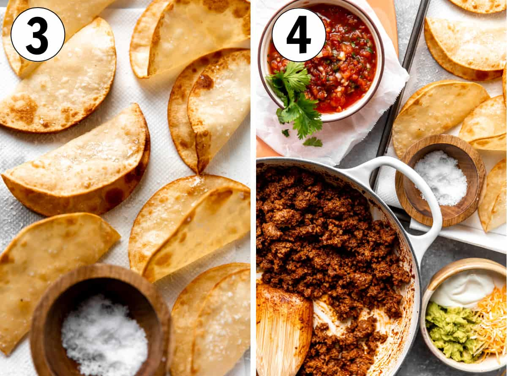

Ground Beef Taco

Ingredients

- 1lb ground beef
- 1 canned, pureed tomato sauce
- cooking oil
- 4x 6 inches flour tortillas
Preparation time
- Prepare ingredients: 30 minutes
- Mix & Serve: 5 minutes
Instructions
Prepare ingredients:

-
Cook the ground beef, cook it up until it’s completely browned. Drain the grease. Then when we return to the heat to the stove lower the heat, add the homemade taco seasoning and a small amount of tomato sauce.
-
Allow the taco meat to simmer briefly in the sauce to give more flavor.

-
Fry the corn tortillas in a small amount of oil in a medium size skillet. Once fried on both sides, remove the tortillas and fold in half to form their shape.
-
Fill the taco shells with the cooked beef and any toppings desired.